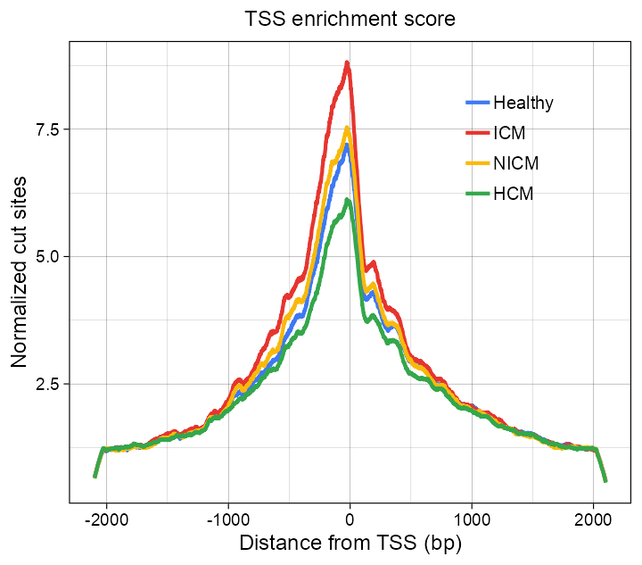
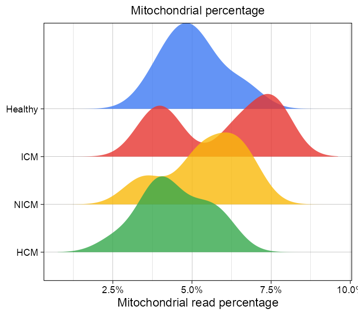
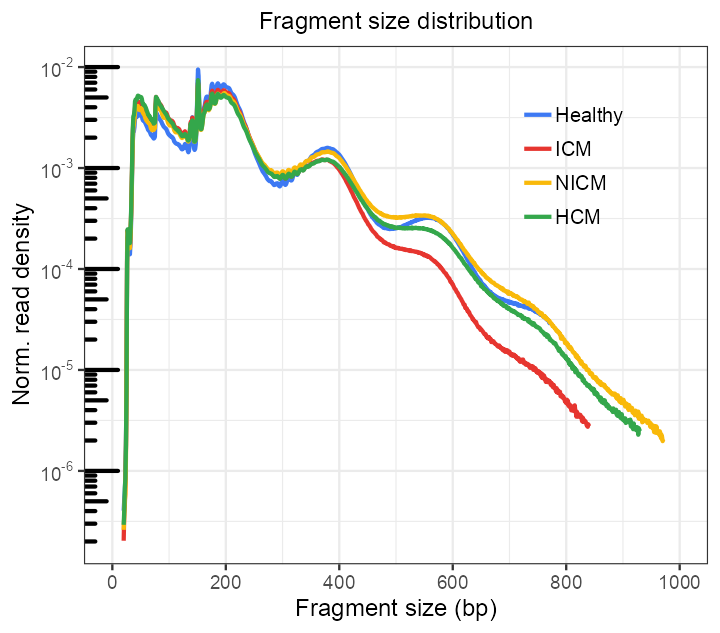
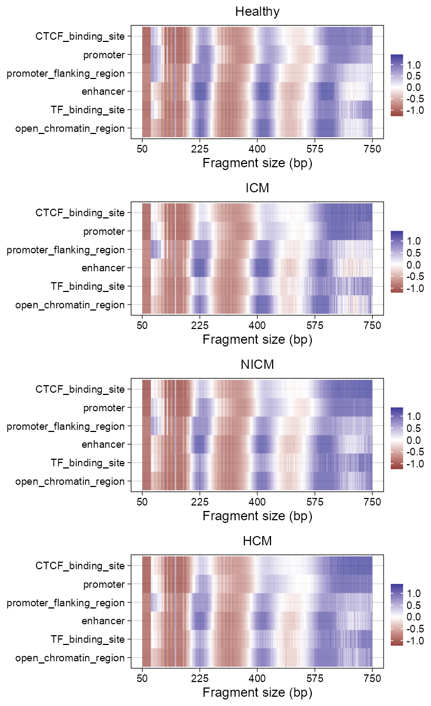

Quality Control
Jialei Duan ![]()
Sys.time()[1] "2022-09-25 14:01:14 CDT"[1] "America/Chicago"Preparation
PROJECT_DIR <- file.path(
"/Users/jialei/Dropbox/Data/Projects/UTSW",
"/Cardiomyopathy/atac-seq"
)Functions
Load required packages.
library(tidyverse)
## ── Attaching packages ────────────────────────────────── tidyverse 1.3.2.9000 ──
## ✔ ggplot2 3.3.6.9000 ✔ dplyr 1.0.99.9000
## ✔ tibble 3.1.8.9002 ✔ stringr 1.4.1.9000
## ✔ tidyr 1.2.1.9000 ✔ forcats 0.5.2.9000
## ✔ readr 2.1.2.9000 ✔ lubridate 1.8.0.9000
## ✔ purrr 0.9000.0.9000
## ── Conflicts ────────────────────────────────────────── tidyverse_conflicts() ──
## ✖ dplyr::filter() masks stats::filter()
## ✖ dplyr::lag() masks stats::lag()
library(Matrix)
##
## Attaching package: 'Matrix'
##
## The following objects are masked from 'package:tidyr':
##
## expand, pack, unpack
library(patchwork)
library(extrafont)
## Registering fonts with R`%+replace%` <- ggplot2::`%+replace%`Python env
numpy version: 1.22.4 reticulate::py_config()python: /Users/jialei/.pyenv/shims/python
libpython: /Users/jialei/.pyenv/versions/mambaforge-4.10.3-10/lib/libpython3.9.dylib
pythonhome: /Users/jialei/.pyenv/versions/mambaforge-4.10.3-10:/Users/jialei/.pyenv/versions/mambaforge-4.10.3-10
version: 3.9.13 | packaged by conda-forge | (main, May 27 2022, 17:00:33) [Clang 13.0.1 ]
numpy: /Users/jialei/.pyenv/versions/mambaforge-4.10.3-10/lib/python3.9/site-packages/numpy
numpy_version: 1.22.4
numpy: /Users/jialei/.pyenv/versions/mambaforge-4.10.3-10/lib/python3.9/site-packages/numpy
NOTE: Python version was forced by RETICULATE_PYTHONQC
TSS enrichment score
Code
fs::dir_ls(
path = file.path(
PROJECT_DIR,
"qc",
"tss_enrichment/raw/core_set_merged",
"cut_site"
),
regexp = "npy$"
) |>
purrr::map(\(x) {
np$load(file = x) |>
{
\(y) {
y / mean(c(y[1:100], y[4102:4201]))
}
}() |>
tibble::enframe(name = "position", value = "score") |>
dplyr::mutate(
category = x |>
basename() |>
stringr::str_remove(
pattern = "Aligned_sorted_deduped_q10_"
) |>
stringr::str_remove(
pattern = "_21_tss_flanking_0.npy"
)
)
}) |>
dplyr::bind_rows() |>
dplyr::mutate(
category = category |> stringr::str_to_title(),
category = dplyr::case_when(
category == "Fresh_healthy" ~ "Healthy",
category == "Fresh_icm" ~ "ICM",
category == "Fresh_nicm" ~ "NICM",
category == "Fresh_hcm" ~ "HCM"
),
category = factor(
category,
levels = c("Healthy", "ICM", "NICM", "HCM")
)
) |>
ggplot2::ggplot(
ggplot2::aes(
x = position,
y = score,
color = category
)
) +
ggplot2::geom_line(size = 0.5) +
ggplot2::scale_x_continuous(
name = "Distance from TSS (bp)",
breaks = c(101, 1101, 2101, 3101, 4100),
labels = seq(-2000, 2000, 1000)
) +
ggplot2::scale_y_continuous(
name = "Normalized cut sites"
) +
ggplot2::scale_color_manual(
name = NULL,
values = as.character(yarrr::piratepal(palette = "google"))
) +
ggplot2::ggtitle(label = "TSS enrichment score") +
ggplot2::theme_linedraw(base_size = 6, base_family = "Arial") +
ggplot2::theme(
legend.background = ggplot2::element_blank(),
legend.margin = ggplot2::margin(
t = 0, r = 0, b = 0, l = 0, unit = "mm"
),
legend.spacing.y = grid::unit(0, "mm"),
legend.key = ggplot2::element_blank(),
legend.key.size = grid::unit(3, "mm"),
legend.text = ggplot2::element_text(
family = "Arial",
size = 5,
margin = ggplot2::margin(
t = 0, r = 0, b = 0, l = -1, unit = "mm"
)
),
legend.position = c(0.7, 0.9),
legend.justification = c(0, 1),
plot.title = ggplot2::element_text(
family = "Arial", size = 6, hjust = 0.5
),
plot.background = ggplot2::element_blank()
)
List files.
fs::dir_ls(
path = file.path(
PROJECT_DIR,
"qc",
"tss_enrichment/raw/core_set_merged",
"cut_site"
),
regexp = "npy$"
)/Users/jialei/Dropbox/Data/Projects/UTSW/Cardiomyopathy/atac-seq/qc/tss_enrichment/raw/core_set_merged/cut_site/Aligned_sorted_deduped_q10_fresh_hcm_21_tss_flanking_0.npy
/Users/jialei/Dropbox/Data/Projects/UTSW/Cardiomyopathy/atac-seq/qc/tss_enrichment/raw/core_set_merged/cut_site/Aligned_sorted_deduped_q10_fresh_healthy_21_tss_flanking_0.npy
/Users/jialei/Dropbox/Data/Projects/UTSW/Cardiomyopathy/atac-seq/qc/tss_enrichment/raw/core_set_merged/cut_site/Aligned_sorted_deduped_q10_fresh_icm_21_tss_flanking_0.npy
/Users/jialei/Dropbox/Data/Projects/UTSW/Cardiomyopathy/atac-seq/qc/tss_enrichment/raw/core_set_merged/cut_site/Aligned_sorted_deduped_q10_fresh_nicm_21_tss_flanking_0.npyInspect data.
fs::dir_ls(
path = file.path(
PROJECT_DIR,
"qc",
"tss_enrichment/raw/core_set_merged",
"cut_site"
),
regexp = "npy$"
) |>
purrr::map(\(x) {
np$load(file = x) |>
{
\(y) {
y / mean(c(y[1:100], y[4102:4201]))
}
}() |>
tibble::enframe(name = "position", value = "score") |>
dplyr::mutate(
category = x |>
basename() |>
stringr::str_remove(
pattern = "Aligned_sorted_deduped_q10_"
) |>
stringr::str_remove(
pattern = "_21_tss_flanking_0.npy"
)
)
}) |>
dplyr::bind_rows() |>
dplyr::mutate(
category = category |> stringr::str_to_title(),
category = dplyr::case_when(
category == "Fresh_healthy" ~ "Healthy",
category == "Fresh_icm" ~ "ICM",
category == "Fresh_nicm" ~ "NICM",
category == "Fresh_hcm" ~ "HCM"
),
category = factor(
category,
levels = c("Healthy", "ICM", "NICM", "HCM")
)
) |>
head(n = 12)# A tibble: 12 × 3
position score category
<int> <dbl[1d]> <fct>
1 1 0.648 HCM
2 2 0.657 HCM
3 3 0.664 HCM
4 4 0.678 HCM
5 5 0.681 HCM
6 6 0.690 HCM
7 7 0.699 HCM
8 8 0.708 HCM
9 9 0.719 HCM
10 10 0.729 HCM
11 11 0.744 HCM
12 12 0.748 HCM Mitochondrial percentage
Code
dataset |>
dplyr::mutate(mt_ratio = num_reads_q10_mt / num_reads_q10) |>
dplyr::mutate(
category = factor(
category,
levels = c("Healthy", "ICM", "NICM", "HCM") |> rev()
)
) |>
ggplot2::ggplot(
ggplot2::aes(
x = mt_ratio, y = category, fill = category
)
) +
ggridges::geom_density_ridges(alpha = 0.8, color = NA) +
ggplot2::scale_x_continuous(
labels = scales::percent,
) +
ggplot2::scale_fill_manual(
values = yarrr::piratepal(palette = "google") |>
as.character() |> rev(),
) +
ggplot2::labs(x = "Mitochondrial read percentage", y = NULL) +
ggplot2::guides(fill = "none") +
ggplot2::ggtitle(label = "Mitochondrial percentage") +
ggplot2::theme_linedraw(base_size = 6, base_family = "Arial") +
ggplot2::theme(
legend.background = ggplot2::element_blank(),
plot.title = ggplot2::element_text(
family = "Arial", size = 6, hjust = 0.5
),
plot.background = ggplot2::element_blank()
)
Fragment size distribution
Code
fs::dir_ls(
path = file.path(
PROJECT_DIR,
"qc",
"fragment_sizes",
"raw"
),
regexp = "fresh.+_CollectInsertSizeMetrics.txt"
) |>
purrr::map(\(x) {
readr::read_delim(
file = x,
delim = "\t",
skip = 11,
show_col_types = FALSE
) |>
normalize_fragment_sizes(
category = x |>
basename() |>
stringr::str_remove(
pattern = "_CollectInsertSizeMetrics.txt"
) |>
stringr::str_to_title()
)
}) |>
dplyr::bind_rows() |>
dplyr::mutate(
category = dplyr::case_when(
category == "Fresh_healthy" ~ "Healthy",
category == "Fresh_icm" ~ "ICM",
category == "Fresh_nicm" ~ "NICM",
category == "Fresh_hcm" ~ "HCM"
),
category = factor(
category,
levels = c(
"Healthy", "ICM", "NICM", "HCM"
)
)
) |>
ggplot2::ggplot(
ggplot2::aes(
x = insert_size,
y = norm_count,
color = category
)
) +
ggplot2::geom_line() +
ggplot2::scale_x_continuous(
name = "Fragment size (bp)",
limits = c(0, 1000),
breaks = seq(0, 1000, 200)
) +
ggplot2::scale_y_continuous(
name = "Norm. read density",
labels = scales::math_format(10^.x)
) +
ggplot2::annotation_logticks(base = 10, sides = "l", scaled = TRUE) +
ggplot2::scale_color_manual(
name = NULL,
values = as.character(yarrr::piratepal(palette = "google"))
) +
ggplot2::ggtitle(label = "Fragment size distribution") +
ggplot2::theme_bw(base_size = 6, base_family = "Arial") +
ggplot2::theme(
legend.background = ggplot2::element_blank(),
legend.margin = ggplot2::margin(
t = 0, r = 0, b = 0, l = 0, unit = "mm"
),
legend.spacing.y = ggplot2::unit(0, "mm"),
legend.key = ggplot2::element_blank(),
legend.key.size = ggplot2::unit(3, "mm"),
legend.text = ggplot2::element_text(
family = "Arial",
size = 5,
margin = ggplot2::margin(
t = 0, r = 0, b = 0, l = -1, unit = "mm"
)
),
legend.position = c(0.7, 0.9),
legend.justification = c(0, 1),
legend.box.background = ggplot2::element_blank(),
panel.background = ggplot2::element_blank(),
plot.title = ggplot2::element_text(
family = "Arial", size = 6, hjust = 0.5
),
plot.background = ggplot2::element_blank()
)
List files.
fs::dir_ls(
path = file.path(
PROJECT_DIR,
"qc",
"fragment_sizes",
"raw"
),
regexp = "fresh.+_CollectInsertSizeMetrics.txt"
)/Users/jialei/Dropbox/Data/Projects/UTSW/Cardiomyopathy/atac-seq/qc/fragment_sizes/raw/fresh_hcm_CollectInsertSizeMetrics.txt
/Users/jialei/Dropbox/Data/Projects/UTSW/Cardiomyopathy/atac-seq/qc/fragment_sizes/raw/fresh_healthy_CollectInsertSizeMetrics.txt
/Users/jialei/Dropbox/Data/Projects/UTSW/Cardiomyopathy/atac-seq/qc/fragment_sizes/raw/fresh_icm_CollectInsertSizeMetrics.txt
/Users/jialei/Dropbox/Data/Projects/UTSW/Cardiomyopathy/atac-seq/qc/fragment_sizes/raw/fresh_nicm_CollectInsertSizeMetrics.txtInspect data.
fs::dir_ls(
path = file.path(
PROJECT_DIR,
"qc",
"fragment_sizes",
"raw"
),
regexp = "fresh.+_CollectInsertSizeMetrics.txt"
) |>
purrr::map(\(x) {
readr::read_delim(
file = x,
delim = "\t",
skip = 11,
show_col_types = FALSE
) |>
normalize_fragment_sizes(
category = x |>
basename() |>
stringr::str_remove(
pattern = "_CollectInsertSizeMetrics.txt"
) |>
stringr::str_to_title()
)
}) |>
dplyr::bind_rows() |>
dplyr::mutate(
category = dplyr::case_when(
category == "Fresh_healthy" ~ "Healthy",
category == "Fresh_icm" ~ "ICM",
category == "Fresh_nicm" ~ "NICM",
category == "Fresh_hcm" ~ "HCM"
),
category = factor(
category,
levels = c(
"Healthy", "ICM", "NICM", "HCM"
)
)
) |>
head(n = 12)# A tibble: 12 × 6
insert_size All_Reads.fr_count All_Reads.rf_count all_reads…¹ norm_…² categ…³
<dbl> <dbl> <dbl> <dbl> <dbl> <fct>
1 20 59 62 59 -6.53 HCM
2 21 81 100 81 -6.40 HCM
3 22 135 115 135 -6.17 HCM
4 23 169 174 169 -6.08 HCM
5 24 362 374 362 -5.75 HCM
6 25 1357 1427 1357 -5.17 HCM
7 26 23899 23859 23899 -3.93 HCM
8 27 49856 49877 49856 -3.61 HCM
9 28 46698 46688 46698 -3.64 HCM
10 29 46807 46847 46807 -3.63 HCM
11 30 42295 42213 42295 -3.68 HCM
12 31 36400 36158 36400 -3.74 HCM
# … with abbreviated variable names ¹all_reads_count, ²norm_count, ³categoryChromatin states
fragment_size <- fs::dir_ls(
path = file.path(
PROJECT_DIR,
"qc",
"fragment_sizes",
"raw"
),
regexp = "fresh.+_CollectInsertSizeMetrics.txt"
) |>
purrr::map(\(x) {
a <- readr::read_delim(
file = x,
delim = "\t",
skip = 11,
show_col_types = FALSE
)
a <- setNames(
object = a$All_Reads.fr_count,
nm = a$insert_size
)
a
})
names(fragment_size) <- names(fragment_size) |>
basename() |>
stringr::str_remove(
pattern = "_CollectInsertSizeMetrics.txt"
)Code
z <- c("Healthy", "ICM", "NICM", "HCM")
purrr::map2(
c("fresh_healthy", "fresh_icm", "fresh_nicm", "fresh_hcm"), z, \(x, z) {
sample_name <- x
fragment_size_distribution <- fs::dir_ls(
path = file.path(
PROJECT_DIR,
"qc/chromatin_states",
"raw",
sample_name
),
regexp = "\\.txt"
) |>
purrr::map(\(y) {
sample_name <- stringr::str_remove(
string = basename(y),
pattern = ".+\\.bam_fragments_"
) |>
str_remove(
pattern = ".txt"
)
readr::read_delim(
file = file.path(
y
),
delim = "\t",
col_names = c("fragment_size", "count")
) |>
dplyr::filter(
fragment_size >= 50,
fragment_size <= 750
) |>
dplyr::mutate(
category = sample_name
) |>
dplyr::select(
fragment_size,
count,
category
)
})
fragment_size_distribution <- fragment_size_distribution |>
purrr::map(\(x) {
x[["percentage"]] <- (
x[["count"]] / (
fragment_size[[sample_name]]
)[x$fragment_size]
)
x[["value"]] <- as.vector(scale(x[["percentage"]]))
x_limits <- quantile(x[["value"]], c(0.1, 0.9))
x[["value"]][x[["value"]] <= x_limits[1]] <- x_limits[[1]]
x[["value"]][x[["value"]] >= x_limits[2]] <- x_limits[[2]]
x
})
fragment_size_distribution |>
dplyr::bind_rows() |>
dplyr::mutate(
category = factor(
category,
levels = c(
"CTCF_binding_site",
"promoter",
"promoter_flanking_region",
"enhancer",
"TF_binding_site",
"open_chromatin_region"
) |> rev()
)
) |>
ggplot2::ggplot(
ggplot2::aes(
x = fragment_size,
y = category,
fill = value
)
) +
ggplot2::geom_tile(ggplot2::aes(fill = value)) +
ggplot2::scale_fill_gradient2(name = NULL) +
ggplot2::scale_x_continuous(
name = "Fragment size (bp)",
limits = c(50, 750),
breaks = seq(50, 750, 175)
) +
ggplot2::scale_y_discrete(name = NULL) +
ggplot2::ggtitle(label = z) +
ggplot2::theme_linedraw(base_size = 6, base_family = "Arial") +
ggplot2::theme(
legend.background = ggplot2::element_blank(),
legend.margin = ggplot2::margin(
t = 0, r = 0, b = 0, l = 0, unit = "mm"
),
legend.key = ggplot2::element_blank(),
legend.key.height = ggplot2::unit(2, "mm"),
legend.key.width = ggplot2::unit(2, "mm"),
legend.text = ggplot2::element_text(
family = "Arial",
# size = 6,
margin = ggplot2::margin(
t = 0, r = 0, b = 0, l = -0.5, unit = "mm"
)
),
legend.box.margin = ggplot2::margin(
t = 0, r = 0, b = 0, l = -1, unit = "mm"
),
legend.box.background = ggplot2::element_blank(),
#
plot.title = ggplot2::element_text(
family = "Arial", size = 6, hjust = 0.5
)
)
}
) |>
purrr::reduce(`+`) +
patchwork::plot_layout(ncol = 1) +
patchwork::plot_annotation(
theme = ggplot2::theme(plot.margin = ggplot2::margin())
)
R session info
devtools::session_info()─ Session info ───────────────────────────────────────────────────────────────
setting value
version R version 4.2.1 (2022-06-23)
os macOS Monterey 12.6
system aarch64, darwin21.6.0
ui unknown
language (EN)
collate en_US.UTF-8
ctype en_US.UTF-8
tz America/Chicago
date 2022-09-25
pandoc 2.19.2 @ /opt/homebrew/bin/ (via rmarkdown)
─ Packages ───────────────────────────────────────────────────────────────────
package * version date (UTC) lib source
BayesFactor 0.9.12-4.4 2022-07-05 [1] CRAN (R 4.2.1)
bit 4.0.4 2020-08-04 [1] CRAN (R 4.2.0)
bit64 4.0.5 2020-08-30 [1] CRAN (R 4.2.0)
cachem 1.0.6 2021-08-19 [1] CRAN (R 4.2.0)
callr 3.7.2 2022-08-22 [1] CRAN (R 4.2.1)
circlize 0.4.15 2022-05-10 [1] CRAN (R 4.2.0)
cli 3.4.1 2022-09-23 [1] CRAN (R 4.2.1)
coda 0.19-4 2020-09-30 [1] CRAN (R 4.2.0)
colorspace 2.0-3 2022-02-21 [1] CRAN (R 4.2.0)
crayon 1.5.1 2022-03-26 [1] CRAN (R 4.2.0)
devtools 2.4.4.9000 2022-09-23 [1] Github (r-lib/devtools@9e2793a)
digest 0.6.29 2021-12-01 [1] CRAN (R 4.2.0)
dplyr * 1.0.99.9000 2022-09-23 [1] Github (tidyverse/dplyr@19c2be3)
ellipsis 0.3.2 2021-04-29 [1] CRAN (R 4.2.0)
evaluate 0.16 2022-08-09 [1] CRAN (R 4.2.1)
extrafont * 0.18 2022-04-12 [1] CRAN (R 4.2.0)
extrafontdb 1.0 2012-06-11 [1] CRAN (R 4.2.0)
fansi 1.0.3 2022-03-24 [1] CRAN (R 4.2.0)
farver 2.1.1 2022-07-06 [1] CRAN (R 4.2.1)
fastmap 1.1.0 2021-01-25 [1] CRAN (R 4.2.0)
forcats * 0.5.2.9000 2022-08-20 [1] Github (tidyverse/forcats@bd319e0)
fs 1.5.2.9000 2022-08-24 [1] Github (r-lib/fs@238032f)
generics 0.1.3 2022-07-05 [1] CRAN (R 4.2.1)
ggplot2 * 3.3.6.9000 2022-09-12 [1] Github (tidyverse/ggplot2@a58b48c)
ggridges 0.5.3 2021-01-08 [1] CRAN (R 4.2.0)
GlobalOptions 0.1.2 2020-06-10 [1] CRAN (R 4.2.0)
glue 1.6.2.9000 2022-04-22 [1] Github (tidyverse/glue@d47d6c7)
gtable 0.3.1.9000 2022-09-01 [1] Github (r-lib/gtable@c1a7a81)
hms 1.1.2 2022-08-19 [1] CRAN (R 4.2.1)
htmltools 0.5.3 2022-07-18 [1] CRAN (R 4.2.1)
htmlwidgets 1.5.4 2022-08-23 [1] Github (ramnathv/htmlwidgets@400cf1a)
httpuv 1.6.6 2022-09-08 [1] CRAN (R 4.2.1)
jpeg 0.1-9 2021-07-24 [1] CRAN (R 4.2.0)
jsonlite 1.8.0 2022-02-22 [1] CRAN (R 4.2.0)
knitr 1.40 2022-08-24 [1] CRAN (R 4.2.1)
labeling 0.4.2 2020-10-20 [1] CRAN (R 4.2.0)
later 1.3.0 2021-08-18 [1] CRAN (R 4.2.0)
lattice 0.20-45 2021-09-22 [2] CRAN (R 4.2.1)
lifecycle 1.0.2.9000 2022-09-23 [1] Github (r-lib/lifecycle@0a6860a)
lubridate * 1.8.0.9000 2022-05-24 [1] Github (tidyverse/lubridate@0bb49b2)
magrittr 2.0.3 2022-03-30 [1] CRAN (R 4.2.0)
Matrix * 1.5-1 2022-09-13 [1] CRAN (R 4.2.1)
MatrixModels 0.5-1 2022-09-11 [1] CRAN (R 4.2.1)
memoise 2.0.1 2021-11-26 [1] CRAN (R 4.2.0)
mime 0.12 2021-09-28 [1] CRAN (R 4.2.0)
miniUI 0.1.1.1 2018-05-18 [1] CRAN (R 4.2.0)
munsell 0.5.0 2018-06-12 [1] CRAN (R 4.2.0)
mvtnorm 1.1-3 2021-10-08 [1] CRAN (R 4.2.1)
patchwork * 1.1.2.9000 2022-08-20 [1] Github (thomasp85/patchwork@c14c960)
pbapply 1.5-0 2021-09-16 [1] CRAN (R 4.2.0)
pillar 1.8.1 2022-08-19 [1] CRAN (R 4.2.1)
pkgbuild 1.3.1 2021-12-20 [1] CRAN (R 4.2.0)
pkgconfig 2.0.3 2019-09-22 [1] CRAN (R 4.2.0)
pkgload 1.3.0 2022-06-27 [1] CRAN (R 4.2.1)
plyr 1.8.7 2022-03-24 [1] CRAN (R 4.2.0)
png 0.1-7 2013-12-03 [1] CRAN (R 4.2.0)
prettyunits 1.1.1.9000 2022-04-22 [1] Github (r-lib/prettyunits@8706d89)
processx 3.7.0 2022-07-07 [1] CRAN (R 4.2.1)
profvis 0.3.7 2020-11-02 [1] CRAN (R 4.2.0)
promises 1.2.0.1 2021-02-11 [1] CRAN (R 4.2.0)
ps 1.7.1 2022-06-18 [1] CRAN (R 4.2.0)
purrr * 0.9000.0.9000 2022-09-24 [1] Github (tidyverse/purrr@4ab13f5)
R.cache 0.16.0 2022-07-21 [1] CRAN (R 4.2.1)
R.methodsS3 1.8.2 2022-06-13 [1] CRAN (R 4.2.0)
R.oo 1.25.0 2022-06-12 [1] CRAN (R 4.2.0)
R.utils 2.12.0 2022-06-28 [1] CRAN (R 4.2.1)
R6 2.5.1.9000 2022-08-04 [1] Github (r-lib/R6@87d5e45)
ragg 1.2.2.9000 2022-09-12 [1] Github (r-lib/ragg@904e145)
Rcpp 1.0.9 2022-07-08 [1] CRAN (R 4.2.1)
readr * 2.1.2.9000 2022-09-20 [1] Github (tidyverse/readr@5cac6ed)
remotes 2.4.2 2022-09-12 [1] Github (r-lib/remotes@bc0949d)
reticulate 1.26 2022-08-31 [1] CRAN (R 4.2.1)
rlang 1.0.6 2022-09-24 [1] Github (r-lib/rlang@66454bd)
rmarkdown 2.16.1 2022-09-24 [1] Github (rstudio/rmarkdown@9577707)
Rttf2pt1 1.3.10 2022-02-07 [1] CRAN (R 4.2.0)
scales 1.2.1.9000 2022-08-20 [1] Github (r-lib/scales@b3df2fb)
sessioninfo 1.2.2 2021-12-06 [1] CRAN (R 4.2.0)
shape 1.4.6 2021-05-19 [1] CRAN (R 4.2.0)
shiny 1.7.2 2022-07-19 [1] CRAN (R 4.2.1)
stringi 1.7.8 2022-07-11 [1] CRAN (R 4.2.1)
stringr * 1.4.1.9000 2022-08-21 [1] Github (tidyverse/stringr@792bc92)
styler * 1.7.0.9002 2022-09-21 [1] Github (r-lib/styler@1f4437b)
systemfonts 1.0.4 2022-02-11 [1] CRAN (R 4.2.0)
textshaping 0.3.6 2021-10-13 [1] CRAN (R 4.2.0)
tibble * 3.1.8.9002 2022-09-24 [1] Github (tidyverse/tibble@e9db4f4)
tidyr * 1.2.1.9000 2022-09-09 [1] Github (tidyverse/tidyr@653def2)
tidyselect 1.1.2.9000 2022-09-21 [1] Github (r-lib/tidyselect@edd0a3b)
tidyverse * 1.3.2.9000 2022-09-12 [1] Github (tidyverse/tidyverse@3be8283)
tzdb 0.3.0 2022-03-28 [1] CRAN (R 4.2.0)
urlchecker 1.0.1 2021-11-30 [1] CRAN (R 4.2.0)
usethis 2.1.6.9000 2022-09-23 [1] Github (r-lib/usethis@8ecb7ab)
utf8 1.2.2 2021-07-24 [1] CRAN (R 4.2.0)
vctrs 0.4.1.9000 2022-09-19 [1] Github (r-lib/vctrs@0a219ba)
vroom 1.5.7.9000 2022-09-09 [1] Github (r-lib/vroom@0c2423e)
withr 2.5.0 2022-03-03 [1] CRAN (R 4.2.0)
xfun 0.33 2022-09-12 [1] CRAN (R 4.2.1)
xtable 1.8-4 2019-04-21 [1] CRAN (R 4.2.0)
yaml 2.3.5 2022-02-21 [1] CRAN (R 4.2.0)
yarrr 0.1.6 2022-04-22 [1] Github (ndphillips/yarrr@e2e4488)
[1] /opt/homebrew/lib/R/4.2/site-library
[2] /opt/homebrew/Cellar/r/4.2.1_4/lib/R/library
─ Python configuration ───────────────────────────────────────────────────────
python: /Users/jialei/.pyenv/shims/python
libpython: /Users/jialei/.pyenv/versions/mambaforge-4.10.3-10/lib/libpython3.9.dylib
pythonhome: /Users/jialei/.pyenv/versions/mambaforge-4.10.3-10:/Users/jialei/.pyenv/versions/mambaforge-4.10.3-10
version: 3.9.13 | packaged by conda-forge | (main, May 27 2022, 17:00:33) [Clang 13.0.1 ]
numpy: /Users/jialei/.pyenv/versions/mambaforge-4.10.3-10/lib/python3.9/site-packages/numpy
numpy_version: 1.22.4
numpy: /Users/jialei/.pyenv/versions/mambaforge-4.10.3-10/lib/python3.9/site-packages/numpy
NOTE: Python version was forced by RETICULATE_PYTHON
──────────────────────────────────────────────────────────────────────────────Citation
BibTeX citation:
@article{bhattacharyya,
author = {Samadrita Bhattacharyya and Jialei Duan and Ryan J. Vela and
Minoti Bhakta and Pietro Bajona and Pradeep P.A. Mammen and Gary C.
Hon and Nikhil V. Munshi},
editor = {},
publisher = {American Heart Association},
title = {Accurate {Classification} of {Cardiomyopathy} {Diagnosis} by
{Chromatin} {Accessibility}},
journal = {Circulation},
volume = {146},
number = {11},
pages = {878 - 881},
date = {},
url = {https://doi.org/10.1161/CIRCULATIONAHA.122.059659},
doi = {10.1161/CIRCULATIONAHA.122.059659},
langid = {en}
}
For attribution, please cite this work as:
Samadrita Bhattacharyya, Jialei Duan, Ryan J. Vela, Minoti Bhakta,
Pietro Bajona, Pradeep P.A. Mammen, Gary C. Hon, and Nikhil V. Munshi.
n.d. “Accurate Classification of Cardiomyopathy Diagnosis by
Chromatin Accessibility.” Circulation 146 (11): 878–81.
https://doi.org/10.1161/CIRCULATIONAHA.122.059659.